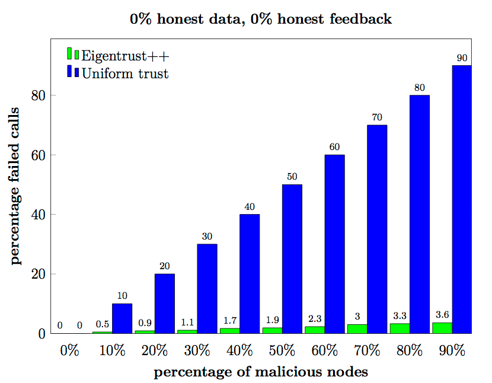

アルゴリズムの拡張
上記のアルゴリズムによる信頼値の計算は、他のノードから返される内容の正しさを知ることができないという問題点があります。
悪意のあるノードが紛れ込み、善意のノードの信頼値を低く、不誠実なノードの信頼値を高く見積もった値を返すかもしれません。
この問題は、他のノードの返した値の信憑性(credibility)を評価し、そのノードの報告した信頼値を信憑性で重み付けすることによって改善できます。
そのためにcommon(u,v)を定義します。これはノードuとノードvの両方と交信したノードの集合です。
そうすると、2つのノードに返されたフィードバックの類似性sim(u,v)が以下のように計算できます。
sim(u,v)=⎩⎨⎧(1−√∣common(u,v)∣∑w∈common(u,v)(suw−svw)2)b0(ifcommon(u,v)≠0)(otherwise)
ただしbは正の整数（原著論文ではb=1を示唆）です。
その場合、フィードバックの信憑性は以下のようにして定義されます。
fij={∑msim(i,m)sim(i,j)0(if∑msim(i,m)>0)(otherwise)
最終的にフィードバックの信憑性を考慮に入れた信頼値の行列L=(lij)は以下のように定義されます。
lij={∑mfimcimfijcij0(if∑mfimcim>0)(otherwise)
これで、前頁の最後の更新式の拡張版を定義することができます。
ti⃗={p⃗(1−a)LTt⃗i−1+ap⃗(otherwise)(ifi=0)
これはべき乗法によって、対応する行列の左特異ベクトルに収束します。
Eigentrust++の原著論文では誠実なノードとそうでないノードとの間の信頼値の伝搬に制限を加えるためにもう一点工夫が加えられていますが、この論文はファイル共有ネットワークへの適用を念頭に置いたものです。
そのようなネットワークでは完全でないデータ（ファイルの一部）が共有される場合があり、その正当性をチェックすることができません。誠実に振る舞っているノードでも問題のあるデータを拡散してしまう場合があるのです。
対して、NEMのノードは常にデータを完全な形式でダウンロードし、他のノードに拡散する前にその完全性をチェックします。
悪意のあるノードが存在する場合でも、信頼の伝搬形式にこれ以上付け加える必要がないことは、NEMネットワークのシミュレーションによって確認されています。
図6

常に非誠実に振る舞うノードによる攻撃のシミュレーション